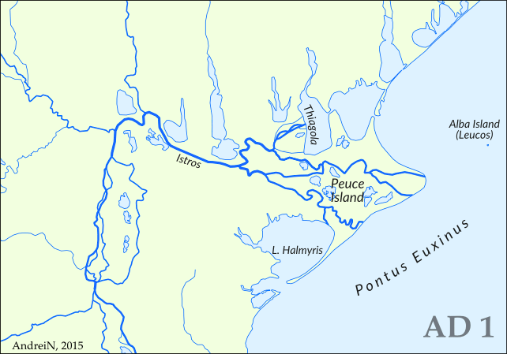

Hidrografia României
România deține o rețea hidrografică complexă, alcătuită din ape curgătoare, lacuri și ape subterane, la care se adaugă și Marea Neagră. Aproape toate râurile (98%) sunt colectate de către Dunăre, iar cca. 70% dintre acestea au izvoarele în Munții Carpați.
Râurile
În funcție de principalii colectori, râurile se grupează în următoarele sisteme hidrografice :
- nord-vestic, cu afluenții nordici ai Tisei: Vișeu, Iza, Tur;
- vestic, Tisa cu afluenții săi: Someș, Crișuri (Repede, Negru și Alb), Mureș cu Târnava Mare și Mică, Sebeș, Strei;
- sud-vestic, Dunărea este colector în afara țării, râurile interioare fiind cele situate la sud de Valea Mureșului: Bega, Timiș, Caraș și Nera;
- sudic, râurile de pe partea stângă a Dunării, de la confluența cu Cerna până la confluența cu Ialomița: Jiu (afluenții Motru și Gilort), Olt (afluenții Râul Negru, Cibin, Lotru și Olteț), Argeș (afluent Dâmbovița), Ialomița (afluent Prahova);
- estic, are ca și colectori Siretul (afluenții Suceava, Bistrița, Trotuș, Buzău, Bârlad) și Prutul (afluenții Bașeu, Jijia cu Bahlui);
- dobrogean (litoral), cu râurile scurte dobrogene, care se varsă în lacurile de pe litoralul Mării Negre.
Localizarea principalelor râuri din România este reprezentată pe harta de mai jos:
Andrein / CC BY-SA 3.0 / Localizarea principalelor artere hidrografice în România
Țărmurile
sunt de următoarele tipuri:
- delte: Delta Dunării;
- limanuri: Tașaul, Techirghiol;
- lagune: Complexul Lagunar Razim - Sinoe.
Lacurile
După originea cuvetei lacustre și așezare, lacurile se clasifică în:
Lacuri în zona de munte
Lacurile glaciare – se găsesc în Munții Carpați, care numără 200 de astfel de lacuri. Acestea sunt formate după topirea ghețarilor și sunt așezate în circuri glaciare: Bâlea, Capra în Munții Făgăraș; Lala și Buhăescu în Munții Rodnei; Gâlcescu în Munții Parâng; Bucura, Zănoaga în Munții Retezat.
Lacurile vulcanice – se găsesc în craterele unor vulcani (de exemplu, Lacul Sfânta Ana s-a format în craterul Ciomatu din Munții Harghitei).
Lacurile de baraj natural – sunt formate prin eroziunea/prăbușirea unor versanți în albia râului, barând astfel cursul (de exemplu, Lacul Roșu, pe Bicaz în Grupa Centrală a Carpaților Orientali).
Lacurile în masive calcaroase – sunt foarte rare, datorită calcarului care este ușor solubil în contact cu apa. Cel mai cunoscut este lacul Vărășoaia din Munții Apuseni.
Lacuri din zonă de deal și podiș
Lacurile în masive de sare – sunt formate după exploatarea sării, cum ar fi Slănic, Prahova, Ocnele Mari din Subcarpați și în Depresiunea Colinară a Transilvaniei, la Turda, Ocna Sibiu, Ocna Mureș, Sovata.
Lacuri din zonă de câmpie
Lacurile de crov (sărate) – au apărut în urma tasării loessului, apa pânzei de apă freatică iese la suprafață. Sunt întâlnite cu precădere în Câmpia Română (Amara, Movila Miresei) și în Câmpia de Vest.
Limanurile fluviatile – au rezultat prin bararea gurii de vărsare a unui râu într-un alt râu, precum este cazul și în Câmpia Română – Căldărușani, Snagov, Balta Albă.
Lacuri din lunca și Delta Dunării (litoral)
Limanurile fluviatile – se găsesc în deltă (Roșu, Puiu, Bogdaproste, Fortuna) și în luncă (Buceac, Oltina);
Limanurile maritime – s-au format prin bararea gurii de vărsare a râurilor în Marea Neagră (Tașaul, Techirghiol, Mangalia);
Lagunele – în foste golfuri de cordoane litorale aduse de mare (Razim, Golovița, Zmeica, Sinoe, Siutghiol);
Lacurile antropice – sunt construite în anumite scopuri, cum ar fi producerea de energie electrică, irigații, piscicultură. Cele mai importante sunt: Porțile de Fier (pe Dunăre), Vidra (pe Lotru), Izvorul Muntelui (pe Bistrița).
Dunărea
Lungimea totală a Dunării este de 2860 km, ceea ce o situează pe locul al doilea printre fluviile europene, după Volga. Bazinul său hidrografic reprezintă 8% din suprafața coninentului Europa.
Harta cursului fluviului Dunărea / Domeniul public
{kind=link}
Construirea celor două canale, Dunăre – Main – Rhin și Dunăre – Marea Neagră, a făcut posibilă realizarea cele mai scurte axe de legătură pe cursul apei dintre Marea Neagră și Marea Nordului.
Din punctul de confleunță al râurilor Breg și Brigach, ce izvorăsc din Munții Pădurea Neagră de pe teritoriul Germaniei, începe Dunărea. De-a lungul cursului său, aceasta străbate zece țări (Germania, Austria, Slovacia, Ungaria, Croația, Serbia, România, Bulgaria, Republica Moldova și Ucraina) și patru capitale (Viena, Bratislava, Budapesta și Belgrad).
De la izvor și până la vărsare, diferențele morfohidrografice ale Dunării împart fluviul în trei sectoare:
Cursul superior (sectorul alpin) – are o lungime de 1060 km, desfășurându-se de la izvoare și până la Bratislava (Poarta Devin). Afluenții din acest sector izvorăsc din Munții Alpi, și anume: Gunz, Mindell, Riss, Ille, Isar, Wurm și Inn;
Cursul mijlociu (sectorul panonic) – este cuprins între Bratislava și Baziaș, cu o lungime de 725 km. Afluenții din acest sector sunt colectați din întregul bazinul său: Drava, Sava, Tisa și Baziaș. Debitul mediu anual la Baziaș, adică la intrarea în țară, este mult mai mare față de celelalte zone, atingând valori de 5300 m³/s;
Cursul inferior (sectorul pontic) – cuprins numai pe teritoriul românesc între Baziaș și și până la vărsare în Marea Neagră, cu o lungime de 1075 km.
În România, Dunărea este împărțită pe următoarele sectoare:
Defileul Dunării – se desfășoară între Baziaș și Gura Văii, adică până la barajul lacului de acumulare Porțile de Fier. Lungimea acestui sector este de 144 km, reprezentând cel mai lung defileu din Europa. Construirea Hidrocentralei de la Porțile de Fier, dar și a sistemului de navigație, a modificat aspectul natural al văii și a rezolvat problemele de navigație.
Subsectorul luncii – este cuprins între barajul de la Porțile de Fier și Călărași. Aici, Dunărea dispune de o luncă largă, cu un număr de până la șapte terase.
Subsectorul bălților – este cuprins între Călărași și Brăila. Pe acest sector, Dunărea se împarte în două brațe principale, Balta Ialomiței și Insula Mare a Brăilei.
Sectorul Brăila – Marea Neagră (Dunărea maritimă) – este cuprins între Brăila și locul de vărsare, și anume Marea Neagră. Acest sector permite accesul vapoarelor maritime de tonaj mare și este constituit din două subsectoare:
Primul sector, este cuprins între Brăila și Pătlăgeanca. Aici, Dunărea are un singur braț larg;
Al doilea sector, este cuprins între Pătlăgeanca și vărsarea în Marea Neagră. În acest sector, fluviul se desparte în două brațe: Chilia și Tulcea. La intrarea în Deltă, brațul Tulcea este împărțit, la rândul lui, în Sulina și Sfântu Gheorghe. La contactul cu Marea Neagră, acestea dispun de guri de vărsare amenajate și dragate.
Delta Dunării
Delta Dunării și complexul laguna Razim constituie cea mai nouă unitate naturală din România. Este situată în sud-estul țării noastre, în partea de nord-est a Podișului Dobrogei, și este traversată de paralela de 45º latitudine nordică (vezi harta de mai jos). Sulina este cel mai estic oraș al țării noastre.
Orion 8 / CC BY-SA 3.0 / Harta Delta Dunării
{kind=link}

Andrein / CC BY-SA 3.0 / Evoluția Deltei Dunării
Regiunea deltei reprezintă o câmpie în formare, cu un relief pozitiv (grinduri) și un relief negativ (brațele Dunării, canalele, gârlele, depresiunile lacustre).
Clima
Clima Deltei Dunării este temperat continentală, cu vânturi din est și nord-est. Acestea aduc vara, din partea de est a Europei, aer uscat și cald, iar iarna, aer rece, geruri și viscole. În partea de vest și dinspre Marea Neagră pătrunde un aer umed. Temperatura media anulă este de aproximativ 11ºC.
Caracterisitici
Cu ajutorul celor trei brațe principale, Dunărea varsă în mare cantități însemnate de apă și aluviuni, repartizarea acestora fiind următoarea:
Brațul Chilia – se găsește în partea de nord. Acestea transportă cca. 60% din aluviuni și volumul de apă și formează o deltă proprie (secundară).
Brațul Sulina – este localizat în partea de mijloc a deltei, cu un curs rectiliniu. În fiecare an, transportă cca. 18% din volumul de apă.
Brațul Sfântu Gheorghe – se întinde spre sud și sud-est. Acesta transportă cca. 22% din volumul de apă și are un curs relativ sinuos.
Regiunea Deltei Dunării reprezintă cea mai importantă zonă piscicolă din România. De asemenea, aici se cultivă cereale, se cresc animale și se exploatează stuf pentru celuloză.
Delta Dunării reprezintă o importantă atracție turistică atât pentru turiștii români, cât și pentru cei străini.
Marea Neagră
Este o mare de tip continental și este de două ori mai mare decât suprafața României. Este localizată în sud-estul Europei (vezi harta de mai jos) și are deschidere la următoarele țări pontice: România, Bulgaria, Ucraina, Rusia, Turcia și Georgia.
Cel mai mare port este Constanța, iar Instanbul (Turcia) este portul cu cel mai mare număr de locuitori. Alte porturi importante sunt: Odesa, Herson (Ucraina), Tuapse, Novorossiisk (Rusia), Poti, Batumi (Georgia), Trabzon, Sinop (Turcia), Varna și Burgas (Bulgaria).
Legătura cu Oceanul Planetar se face prin sistemul Strâmtoarea Bosfor, Strâmtoarea Dardanele și Marea Marmara. Marea Azov este o anexă la Marea Neagră, cele două comunicând una cu alta prin Strâmtoarea Kerci.
Relieful Mării Negre este definit de o platformă litorală, ce coboară lent, aproape până la 200 m. Aceasta este foarte largă în zona de nord-vest a bazinului și îngustă, de până la 10 km, în zona de sud și sud-est. Această platformă se continuă cu un povârniș, cu o pantă accentuată, diferența de nivel fiind de la 200 m până la 1500 – 1800 m. Aceasta este continuat cu un fund neted, cu o adâncime maximă de 2245 m.

NormanEinstein / CC BY-SA 3.0 / Harta localizării Mării Negre
Marea Neagră prezintă un bilanț hidrologic pozitiv, nivelul mării crescând cu 1 mm pe an.
În partea de nord, este localizată singura peninsulă: Peninsula Crimeea. Aceasta pătrunde cu putere spre sud, astfel izolând, astfel, Marea Azov.
Mișcările apelor
Mareele – dau variații diurne, însă neînsemnate, de doar 8 – 12 cm. Cauza principală este caracterul închis al Mării Negre;
Valurile – sunt generate, în special, de vânturi, cu precădere cele care bat din nord-est, nord, est și sud-est. În mod obișnuit, ele ating înălțimi de 2 – 4 m, iar pe vreme nefavorabilă, cu intensificări de vânt și furtuni, pot ajunge și la 6 – 8 m;
Curenții ocazionali de suprafață – apar sub impulsul vânturilor, cu precădere în nord-estul bazinului, fiind completați de curenții specifici strâmtoarei Bosfor. Acești curenți sunt specifici schimburilor de ape cu Marea Mediterană. Aceștia pot fi împărțiți în:
Curenți de „descărcare” (circulari): sunt întâlniți la suprafață. Aceștia au un conținut de ape dulci, care sunt transportate din Marea Neagră în Marea Mediterană. Aceștia au o importanță pe țărmul vestic. Aici preiau aluviunile fluviale pe care le abat spre litoral, împreună cu nisipurile marine, unde formează cordoane și plaje. În spatele acestor cordoane sunt închise limanuri și lagune.
Curenți de „compensare”: sunt prezenți la adâncime, prin aportul de apă sărată din Marea Mediterană, care trece în Marea Neagră.
Temperatura medie anuală a apei din Marea Neagră este de peste 12ºC, cu 2ºC mai mult decât aerul atmosferic.
Vegetația este alcătuită din alge și iarbă de mare.
Fauna se împarte în animale ce înoată în masa apei (meduze, scrumbii, chefali, calcani, morunul, cega etc.), animale de fund (midii, stridii, crabi) și animale de pe țărm (pescăruși).
Litoralul românesc are o lungime de 245 km și se împarte în două sectoare diferite:
- sectorul nordic, jos, lagunar, deltaic, mai puțin populat (localitățile Sulina, Sfântu Gheorghe și cel mai mare complex lacustru, Razim – Sinoe);
- sectorul sudic, cu o faleză construită din calcar, peste care se suprapun depozite de loess. Aceasta este întreruptă de golfuri mici, barate de cordoane marine. Sectorul sudic este foarte populat, aici găsindu-se numeroase stațiuni ce desfășoară activități socio-ecomice (Constanța-Agigea, Mangalia, Midia-Năvodari) și stațiuni balneoclimaterice (precum Mamaia, Eforie Nord, Eforie Sud, Costinești etc.).
Alte aspecte interesante
Efectul Coriolis din emisfera nordică (curenți de aer) face ca uraganele și furtunile să se manifeste în sens invers față de emisfera sudică. De asemenea, stelele văzute pe cer în emisfera sudică nu sunt aceleași ca în emisfera nordică.
Lacul Zănoaga (Munții Retezat) este cel mai adânc lac din România, cu o adâncime de 29 m.
Lacul Bucura (Munții Retezat) este cel mai întins lac din România, cu o suprafață de 8,8 ha.